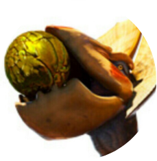

About

Taku Datehora
舘洞 拓
Web Application Developer
HTML / CSS / Excel VBS / JavaScript
一見すると巨大な鳥のような風貌から《(大)怪鳥》と通称される。耐火性に長ける桃色の外殻としゃくれた大きな嘴、
そして扇状に開くこれまた大きな耳が特徴。本来は非常に臆病な性格で戦闘は好まないとされ、
他の大型モンスターと遭遇した際には逃げ出すことが多いという。。。